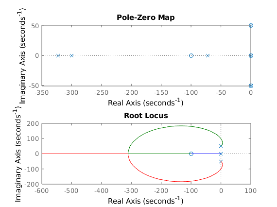

Contents
Magnetic Levitation Project
Corey and Eamon
%Define variable for the system %https://www.daycounter.com/Calculators/Magnets/Solenoid-Force-Calculator.phtml %based off of https://media.digikey.com/pdf/Data%20Sheets/Adafruit%20PDFs/3875_Web.pdf mu = pi*4e-7; % permeability of space q1 = .01; % Magnetic force of small magnet in Teslas N = 4000; % # of turns in solenoid A = 60; % Area of solenoid in mm^2 R = 8.66; % Internal resistance of solenoid (5V/.6A) in Ohms g = -9.81; % Acceleration due to gravity %The setpoints for the linerization %First we chose our 'b' setpoint for voltage %And find an a that cancels out the constant b = 5; a = abs(sqrt((5*mu*q1*N*A)/(4*pi*R*g))); %Z allows us to use cleaner math by placing %all of our constants into one constant. Z = (mu*q1*N*A)/(4*pi*R); %Define the system G = tf([Z/a^2],[1 0 Z*b/a^3]);
Closed Loop
close all k = 354; kd = 1; kp = 200; ki = 10e3; H = 1; C = tf([kd,kp,ki],[1,0]); C = C*k % Visualize system % open loop Gol = C*G*H; % close loop CL = (C*G)/(1+C*G*H); figure subplot(2,1,1) pzmap(CL) subplot(2,1,2) rlocus(Gol) figure step(CL)
C =
354 s^2 + 70800 s + 3.54e06
---------------------------
s
Continuous-time transfer function.
